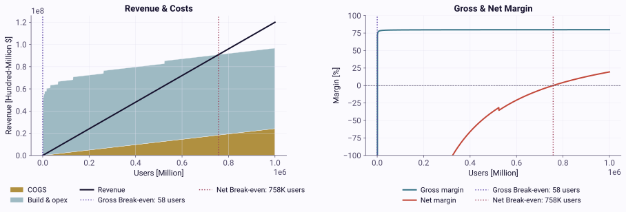
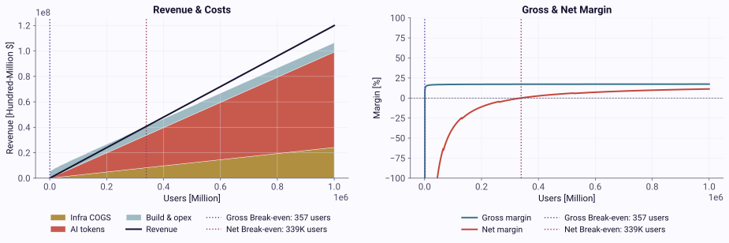

How AI changes software P&L
Summary of software P&L
Software is thought of as having uniquely high margins compared to other industries. The high margin is due to the fact that most of the cost of building software is in writing it, and the cost to create a copy for each user is negligible. Originally, the main costs for adding an additional user, or the cost of goods sold (COGS), were some form of support and variable costs that included the CDs/floppy disks the software was distributed on. As software became cloud/server hosted, the COGS grew to include the hosting infrastructure and expanded support costs for things like DevOps and onboarding. Despite this increase in costs, gross margins remained exceptionally high, with many SaaS companies exceeding 70%.
$$\text{Gross Margin} = \frac{\text{Total Revenue} - \text{COGS}}{\text{Total Revenue}}$$
Gross margin is great since it can tell you if you're generally making or losing money with each user you add, but it does hide the actual cost to build the software in the first place. If that cost is not properly accounted for, a company with a high gross margin might find that they're actually losing money. To figure out if the total business is making money once you account for all costs, not just COGS, companies calculate net margin.
$$\text{Net Margin} = \frac{\text{Total Revenue} - \text{Total Costs} - \text{Interest} - \text{Taxes}}{\text{Total Revenue}}$$
Net margin goes beyond gross margin to include all fixed costs such as the actual cost of developers and the team, research cost, office cost, software licenses, and compliance. Net margin also subtracts from revenue the costs for taxes, interest, marketing, and any other fixed budgets. The goal with calculating net margin is to understand if the company is recovering its total investments. In software, it tells us if the revenue has covered the cost to build out the software. The same SaaS companies that can have a 70%+ gross margin also target a 20-30% net margin. This net margin is still exceptionally high when compared with consumer goods, which tend to reach <10% net margin.
Many companies balance investing in growth and optimizing for a positive net margin. During a growth focus, companies will increase their fixed cost spend to acquire more users, which results in downward pressure on the net margin. In SaaS, this tradeoff has become known as the "rule of 40", where healthy companies try to have the sum of the growth rate and net margin exceed 40% (e.g. 10% growth, 30% net margin; 50% growth, -10% net margin). These high margins and the ability to invest in growth while recouping that cost at scale are what led to high multiples for software company valuations, and made strategies such as Blitzscaling viable. To see how this plays out in real companies, in Appendix 1, I've extracted the margins for 8 public SaaS companies.
AI features break this. Because traditional software can reuse experiences across common behavior patterns and find multi-tenancy optimizations, for these companies the COGS per user decreases as adoption increases, allowing them to reach high margins compared to other industries. I expect that AI-based capabilities will break from this pattern. Since the value of AI-based features is that they introduce personalized, dynamic experiences, there will be significantly fewer technical options to lower the AI cost per user as adoption increases. Because of this, AI-heavy products will no longer see the same reduction in COGS per user at scale. Instead, companies with these products will see the COGS per user grow linearly with adoption, resulting in lower margins, which will push their business model closer to that of a consumer goods company.
Example
To explain this further, I'll build out two example companies:
- GainZ, which is a traditional SaaS company.
- AIBoost, which is a new company being built.
Both of these will sell products that generate annually about $120/user, equivalent to ~$10/user monthly. This could be either a license with capped usage or a usage-driven average. The costs I'll outline may seem high since they're in the millions. Consider that the cost associated with a single engineer is now at, or over, $500K/year, so a company with 10 people exceeds $5M in just employee costs. I'll show how the two companies' product P&Ls compare.
For simplification, we'll talk about high costs being incurred before a single user is added and a predictably recursive growth rate in the cost. In practice, companies may start adding/generating revenue before a product reaches completion of the first version and have less predictable cost scaling by user gained. I'm simplifying to show my points more clearly.
GainZ: Margins for traditional SaaS
Revenue GainZ sells usage-driven plans that generate annually about $120/user reliably. At 1 million users, this adds up to $120M in annual revenue.
Fixed Costs Between the salaries for the team needed to build the product, the infrastructure they need for R&D, marketing to get the first users, and everything else needed to ship the first version of the product before a single user has paid for it, it costs ~$25M. Now, this might be enough to get the first set of users, but inevitably they will need to increase their investment if they want to double their users since they will need more features and capabilities. We'll assume it costs an incremental 10% each time they want to double their user base. At this rate, to reach 1 million users, GainZ needs a fixed investment of ~$73M.
COGS Luckily, the team has built a highly efficient scalable core where the more users they have, the lower the cost/user gets. Early on, the annual cost is about $200/user to support their usage, but by the time they reach a million users, it's down to $24/user.
Margin With the costs and pricing, GainZ runs at a negative gross margin for the first 58 users and a negative net margin all the way up to 758K users. After this break-even point, because of the scaling benefits, adding 242K users drives the net margin close to the target of 20%. Additional users would push it even higher. Review Table 1 for a full breakdown of the costs, profit, and margin for different user levels.
While the margin seems to be growing fast once the break-even points are reached, both asymptote as shown in Figure 1. We can see that in this model, gross margin has already reached its limit while the net margin's growth is slowing down. At this scale, GainZ is likely starting to reach market saturation, meaning that they are likely running out of customers willing to buy their current product at its price point. When this happens, to drive adoption, many companies may lower prices or start building new products, both of which put downward pressure on the margins.
| Users | Revenue | COGS | Total Cost | Profit | Gross Margin | Net Margin |
|---|---|---|---|---|---|---|
| 1 | $120 | $4.4K | $25M | -$25.0M | -3,533% | -20,836,867% |
| 10 | $1.2K | $5.0K | $32.5M | -$32.5M | -313% | -2,708,646% |
| 58 | $7.0K | $6.9K | $37.5M | -$37.5M | 0% | -538,792% |
| 100 | $12K | $8.3K | $40.0M | -$40.0M | 31% | -333,303% |
| 1K | $120K | $33.7K | $47.5M | -$47.4M | 72% | -39,511% |
| 10K | $1.2M | $261.8K | $57.8M | -$56.6M | 78% | -4,713% |
| 100K | $12M | $2.5M | $67.5M | -$55.5M | 80% | -462% |
| 758K | $91.0M | $18.3M | $90.8M | $110.6K | 80% | 0% |
| 1M | $120M | $24.2M | $96.7M | $23.3M | 80% | 19% |
Table 1. The revenue, costs, profit, and margins for GainZ at each order of magnitude of user growth. We also have the break-even points for both the gross margin (58 users) and net margin (758K users).

Figure 1. GainZ's revenue, cost, and margin growth as adoption goes from 0 to 1 million users.
AIBoost: Margins for AI native software
Revenue AIBoost is coming into the market and has done their homework, so they know how much users are willing to pay for GainZ. AIBoost decides that even though they'll have new AI-based features, because they are new and can build more cheaply, they'll charge the same amount as GainZ. They expect that their new features will let them win customers. With this strategy, AIBoost will similarly generate annually about $120/user. At 1 million users, this also adds up to $120M in revenue.
Fixed Costs AIBoost is counting on using the latest AI capabilities to build their product more efficiently and with fewer people. They expect that with this approach they're able to build the first version of the product for 1/10th the cost, or ~$2.5M. Even though their building cost has been decreased, they similarly have to invest more to increase adoption. We'll again assume it costs an incremental 10% each time they want to double their user base. At this scale, to reach 1 million users, AIBoost needs a fixed investment of ~$7.3M.
COGS Even though AIBoost was able to build the product for 1/10th the cost, they quickly find that, for the core product capabilities, their COGS mirror those of GainZ closely. This means that for the first set of users, it costs them annually ~$200/user. Similarly, for this set of COGS, they see scaling benefits where, at 1 million users, the annual cost has dropped to $24/user.
But this is only half of AIBoost's COGS since they also added several AI-based capabilities to their product. These features were added to drive adoption by taking advantage of AI capabilities to create new personalized, adaptive experiences. These new capabilities burn tokens each time a user uses them and end up costing AIBoost ~$75/user annually. Because the capabilities are unique to each user, this cost remains consistent, even at 1 million users.
Margin For AIBoost, the margin picture looks quite different. Despite AIBoost having a lower fixed cost, the higher COGS means that they need 357 users to reach a positive gross margin, almost 6x as many users as GainZ. To break even on net margin, though, because of the lower fixed cost, AIBoost only needs 339K users, about half as many as GainZ. As AIBoost keeps scaling, even at 1 million users their net margin only reaches 11%. This highlights that despite reaching profitability earlier than GainZ, the high linearly growing COGS is preventing AIBoost from reaching the high margins software companies strive for.
In Table 2, we can see that the gross and net margins are significantly closer for AIBoost than they are for GainZ. This is because the COGS is on the same order of magnitude as the fixed costs. This cost pattern is more similar to cost patterns seen in consumer goods and manufacturing. We can see a similar margin limit in Figure 2. Additionally, in the figure we can also see just how large of an impact the cost of AI features has, very quickly becoming the dominant cost. This change in cost profile for AI-heavy products means that companies building them need to change their growth strategies.
| Users | Revenue | COGS | Total Cost | Profit | Gross Margin | Net Margin |
|---|---|---|---|---|---|---|
| 1 | $120 | $4.4K | $2.5M | -$2.5M | -3,596% | -2,086,929% |
| 10 | $1.2K | $5.7K | $3.3M | -$3.3M | -376% | -271,209% |
| 100 | $12K | $15.8K | $4.0M | -$4.0M | -32% | -33,365% |
| 357 | $42.8K | $42.8K | $4.5M | -$4.5M | 0% | -10,504% |
| 1K | $120K | $108.7K | $4.9M | -$4.7M | 9% | -3,949% |
| 10K | $1.2M | $1.0M | $6.8M | -$5.6M | 16% | -463% |
| 100K | $12M | $10.0M | $16.5M | -$4.5M | 17% | -37% |
| 339K | $40.7M | $33.7M | $40.7M | $12.4K | 17% | 0% |
| 1M | $120M | $99.2M | $106.4M | $13.6M | 17% | 11% |
Table 2. The revenue, costs, profit, and margins for AIBoost at each order of magnitude of user growth. We also have the break-even points for both the gross margin (357 users) and net margin (339K).

Figure 2. AIBoost's revenue, cost, and margin growth as adoption goes from 0 to 1 million users.
Handling expensive AI features
Economy of scale
So why is there not an economy of scale for AI features similar to traditional features? If an AI capability is just another feature in a product, why can it not be optimized similarly to a database or workflow?
Economies of scale arise when efficiencies can be found from the redundancy of doing the same thing thousands or millions of times. For instance, in a database that focuses on storing clothing information, as adoption scales, users will start to show common patterns. Their usage will likely follow consistent patterns, so the infrastructure can scale down dynamically during expected low usage periods. The data entered in the database will have similarities, allowing better compression rates on the data and leading to more efficient storage. Users in the same company will also have similar queries, so tables can be indexed and results can be cached, reducing querying costs. All of these will combine to ensure that, for the database, each additional user or company costs less to add and support than the previous one. AI-based features, though, are different. Their benefit in products is to add flexibility, dynamics, and personalization. When the feature is used, it's personalized to the user. The focus on personalization and context leak prevention will mean scaling efficiencies such as caching will have a lot less benefit. This implementation pattern is why there won't be efficiencies at scale, and cost will scale linearly with usage.
If you're following the space, you will rightly point out that per-token costs are declining predictably, as highlighted by Wright's Law that predicts the cost per token has dropped roughly an order of magnitude per year for the past few years. While this is indeed true due to inference efficiencies, distillation, and chip improvements, this drop in cost has been matched by a similar growth in the tokens consumed to complete a task. Reasoning models burn 10-100x more tokens than the models they replaced and agent frameworks can make dozens of thinking calls together. This is coupled with growing context windows that get filled with personalized data on each call. This increased usage means that while the cost per token has dropped, the cost to complete a task has stayed roughly flat. Even if token deflation eventually outpaces this growth in usage, the costs will still be linearly linked to adoption.
Increased cost
If there isn't an economy of scale, can't you just charge more for AI features to hit your target margin? If the features are so great and powerful, won't users be willing to pay more for them?
Raising prices and/or charging separately for AI features may work in the short term, especially for the first few products in a space or for an existing product with users adding new AI capabilities. This approach of charging a premium in a green-field space can be seen in consumer goods and manufacturing. In software, this will truly only be a short-term bandaid. Since agents have lowered the cost to build so much, once a proven price point has been established in a space, competitors willing to take lower margins will enter lucrative markets, increasing competition. The main pressure against competitors will be non-software moats such as network effects, data flywheels, or switching costs, will hold up better.
If a company raises prices, this increased competition will force them to respond in two ways. First, race to the bottom by lowering prices. This can be effective if they're in a winner-takes-most market and they have access to a lot of capital. In this scenario, the viable approach is burning cash to be the winner and, once they are the winner, increasing prices to regain margins. Alternatively, they can focus on going beyond software to add more value to their product. This could include ensuring that buying the software also means transferring liability, gaining regulatory compliance, or some other service-based value. The key is to find a capability that is hard to copy. By bundling that capability for customers with the easy-to-copy software, they can charge a premium, resulting in increased margins.
Build your own model
Wouldn't building your own model give you a wedge to increase the margin on AI features? By owning the model, surely you can find some scaling efficiencies.
For generalizable models and agents, at this time, it will be hard to compete with OpenAI, Google, Anthropic, and other frontier labs. Open models require hosting costs, which have their own high costs. Additionally, open models are consistently 6-12 months behind in capabilities, a gap that, in a competitive market, can mean losing customers. If a company manages to find a profitable pattern for generalizable models that users enjoy, their best product will likely be to sell access to the model and not worry about other software products.
For a specialized task, though, building and hosting their own model can be a leverage point. If they need AI flexibility for a nuanced task, they have access to non-public data for the task, and they can create an efficient model that proves valuable (via cost or performance), then this can be a major differentiator. For specialized models, since their utility is constrained, scaling benefits may also emerge. Additionally, if they are deployed with the right data flywheels in place, deploying them can lead to an even better product differentiation. All of these can lead to decreasing costs and the ability to charge a premium, helping increase their margins. I do warn them to be cautious with this approach. Thoroughly vet if they truly have a unique task, unique data, and/or unique approach. Often, a company might think they have unique data, but they either can't train on it for regulatory reasons or every competitor has their own similar version of the unique non-public data.
Arbitrage opportunities
Given how new the latest AI capabilities are in software, there are a number of arbitrage opportunities for those willing to move fast enough. Not all of the opportunities will have high margins, but, as outlined below, under the right operating models they can be successful. Many people have built successful businesses in low-margin industries, and those of us in software can learn from their successes and failures.
Cheap clone
This is the least creative option. During a time of transition like we are in now, a short-term opportunity emerges to use modern tools to create a lower-cost competitor to existing options. For this opportunity, a company would use the latest AI capabilities to lower their fixed costs by 90%. They would not add any new AI capabilities, so they also maintain low COGS. Because of the low costs, they can enter an existing market and undercut competitors while maintaining healthy margins. To execute this correctly, they will need to move quickly, since existing companies are transitioning to adopt new AI capabilities and lower their own fixed costs. The winning move here is to build fast and launch a product soon enough and at a cheap enough price to build momentum before an incumbent can react. This move is only available in the short term since it has no moat, so others can do the same move and trigger a race to the bottom.
A more sustainable twist on this move is to be more than just a low-cost knock-off. A company can use this strategy to gain a foothold in a space, only build the table stakes portion of the product, and then use the low build cost to innovate and build a superior product.
Niche & ultra low-cost products
One better approach is to create a scenario where revenue in the billions isn't required and focus on what the new unit economics unlocks. Since the build cost is dropping, niche products that did not have a path to a positive margin have suddenly become viable. The most common examples are:
- Products that need to be priced super cheaply so they could not pay for the build cost even at enormous scale. This is likely a product that does just a single thing well (e.g. turn a photo into a headshot) or is being sold in a cash-restricted market so it needs to be sold cheaply. Now that the fixed cost to build is 1/10th of what it was, suddenly there's a path to a positive margin.
- Products that have a small user base. While there are multiple SaaS products that are incredibly expensive (e.g. Bloomberg terminal costs $32K/year/seat), if a product just doesn't have a large enough user base willing to pay the price required to cover the total cost, there is no path to profitability. With the decreases in the fixed cost, many of these products where the limit was a small total market will now have a path to a positive margin.
- Products that were too expensive because they were too complex to build. There are some problems that can already be solved with software today, but solving them has been just too expensive to tackle. With the decreased build cost, and the ability to use AI-based features as a replacement for enumerating every possibility at a decision point, some of these problems will become cheap enough to have a path to a positive margin.
The key to the first two items on the list is to ruthlessly manage the fixed cost investment and to lower revenue expectations. I expect that in the coming years, we'll see many lifestyle businesses emerge to target both of these spaces. A lifestyle business is a company established and operated by founders primarily to sustain a specific level of income and support a desired personal lifestyle, rather than rapid growth or quick exit. Users will also benefit from these companies since, instead of having to customize a generic solution, it's more likely they'll find a better bespoke solution.
For the third opportunity, complex products, I expect that many incumbents will reach for them. As competition invades the SaaS space, incumbents will look for differentiation to retain users and margin. They will leverage their ongoing revenue streams, industry expertise, and data flywheels to tackle the expensive problems that used to not make sense. They'll hope that tackling these problems is beyond the reach of competitors while also desirable enough that users are willing to pay the premium.
Luxury software
In the consumer goods space, one of the higher-margin segments is luxury goods. These companies use a number of levers to differentiate themselves, including focusing on quality and experience. In the most competitive markets, the biggest lever they pull is branding. Branding becomes a strategic process that creates a distinct identity, reputation, and perception about their product. Paul Graham recently wrote an essay about branding in relation to watches, and how luxury Swiss watches use branding to command higher prices.
This strategy requires that a software company is able to pull the right levers and create the right branding to create the "luxury software" segment. This segment would need to trigger the same exclusivity and FOMO luxury goods create. Companies in this space will then be able to drive higher prices and higher margins. I've seen hints of exclusivity being leveraged by dating apps (e.g. Raya), event communities (e.g. Dorsia), and financial apps (e.g. Bloomberg Terminal) but all of these rely on exclusive access, not just pure branding. The closest to a pure luxury software was the I Am Rich App that sold for $999.99 (ironic to try to be luxury but resort to price gimmicks), but it was quickly shut down.
More than software
Similar to products pairing exclusive access with software, any product that bundles more than just software is going to be one of the best paths to leverage the new AI capabilities and hit the revenue and growth targets for venture-backed companies. An example is companies that are able to work in the world of atoms (e.g. do lab tests, run manufacturing, connect humans) or atom proxies (unique results or data). This capability will be paired with great software to drive an advantage over a pure-play software company in the same space. This mirrors the vertical integration strategies used in manufacturing and consumer goods. A company can improve its margins by going directly from raw good or service to the user and finding economies of scale through the vertical specialization. I expect that, in the coming decade, this will become the dominant format new hyper-growth startups choose.
Wrap-up
All of these arbitrage opportunities represent some of the ways to attack the changing cost profile coming from AI-based capabilities. Software companies and PMs will need to adjust how they view software costs at scale and prepare for lower margins. For small teams and driven individuals, this will be a great time to build lifestyle businesses and avoid the hyper-scaling push of venture capital. For larger software companies, now is the time to tackle the expensive, complex problems that had been deferred and/or start eyeing vertical integration.
Across the board, PMs should look at other low-margin industries and start learning from their successes and failures. The companies and PMs that don't adjust will be in for a rude awakening as their costs keep growing and their margin drops.
Appendix 1
A sample of SaaS company margins
| Company | Year | Revenue | Gross Margin | Net Margin | Source |
|---|---|---|---|---|---|
| Salesforce | FY2025 | $37.895B | 77.2% | 16.4% | SEC 10-K |
| Adobe | FY2025 | $23.769B | 89.3% | 30.0% | SEC 10-K |
| ServiceNow | FY2024 | $10.984B | 79.2% | 13.0% | SEC 10-K |
| Workday | FY2026 | $9.552B | 75.7% | 7.3% | SEC 10-K |
| Atlassian | FY2025 | $5.215B | 82.8% | -4.9% | SEC 10-K |
| Palantir | FY2025 | $4.475B | 82.4% | 36.5% | SEC 10-K |
| Snowflake | FY2025 | $3.626B | 66.5% | -35.5% | SEC 10-K |
| Datadog | FY2025 | $3.427B | 80.0% | 3.1% | SEC 10-K |